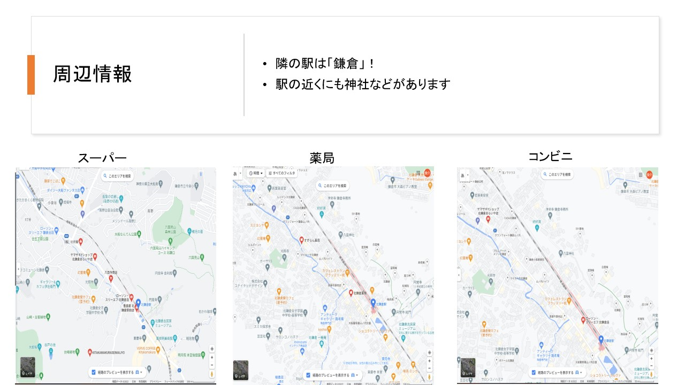

スライドと発表内容
このスライドでは、おすすめ駅を紹介する大学生の特徴を明確にした。
次のスライドでは、ターゲットに合った物件の条件を示した。
この次から、条件に該当する二駅の紹介に入るのだが、その前にどうしてその二駅になったのかを説明するべきだった。
(詳しくは反省欄に記載)
おすすめ駅の一つ目は登戸駅。
路線や経路など簡単な概要を説明。

このスライドでは、登戸駅のより詳細な情報を示した。
周辺にある魅力的な場所も軽く説明。
おすすめ駅二つ目は北鎌倉駅。
路線や経路など簡単な概要を説明。
このスライドでは、登戸駅のより詳細な情報を示した。

周辺にある魅力的な場所も軽く説明。
まとめとして気づいたことを示した。
反省と改善点
一番大きな反省としては、発表後先生に指摘された「どうして二駅に絞られたのか」を省いてしまったことである。
まず、私たちの班は、路線を分担して情報を調べ、各々のおすすめ駅を持ち寄ることにしていた。
そして、メンバー5人それぞれのおすすめ駅から「より意外性がある駅はどこか」「条件により当てはまっている駅はどこか」という点で議論し、
登戸駅と北鎌倉駅の二つに絞ることとなった。
路線を分担するという段階で、分担した路線に明確な理由があったわけでもなく、思いついた路線という感じで決めてしまったのも良くなかったと思う。
また、ターゲットとして地方から上京してきた女子大学生を挙げたため、「地方とのギャップを感じにくいこと」を条件としたが、
今回のように数値的な情報をメインに考えていく場合、私たちの「条件」では判断しづらかったことも反省点である。
改善点としては、路線や駅を絞る際に「物件数が多いところ」や「合計時間が短いところ」など、まずは大きく対象とするものを選択することがある。
そして、ターゲットや条件を「数値で判断しやすいもの」かつ「オリジナリティのあるもの」にすることも改善できるところである。
班の活動としては、全員でよく話し合い、楽しくできたことはとても良かったと思う。